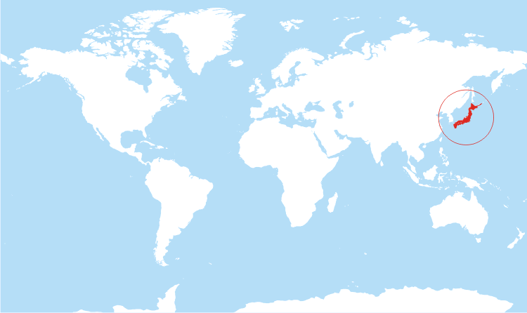
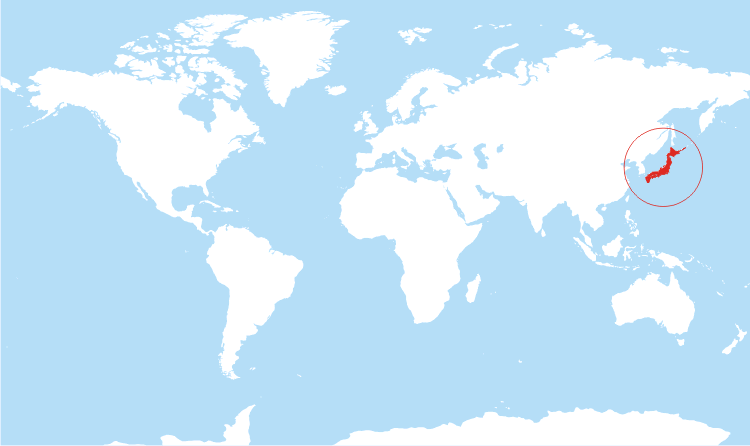

JAPAN
 

- Area: 377,975 km2
- Population: 126.5 million
- Capital: Tokyo
- Currency: Japanese yen (¥) (JPY)
- Language: Japanese
- Fun fact: Japan is made up of 6,852 islands.
Top 3 Places to Visit in Japan
1. Mount Fuji

Mount Fuji is the highest mountain in Japan. It is located on the island of Honshu. It is 3,776 metres tall, and thus, it can be seen from Tokyo more than 100 kilometres away. Mount Fuji is snow-capped for about 5 months of the year. Every year, more than 200,000 people climb Mount Fuji.
2. Golden Pavilion

Kinkaku-ji or the Temple of the Golden Pavilion, is located in Kyoto, Japan. The temple was originally built as a retirement villa for Shogun Ashikaga Yoshimitsu in the late 14th century. The temple was burnt down in 1950, but it was later rebuilt in 1955 as an exact copy of the original. The top two floors of the temple are completely covered in gold leaf. This design highlights the reflection of the temple in the pond and the pond’s reflection on the building.
3. Imperial Palace

The Imperial Palace is located in Tokyo. The majority of the palace is closed to the public, because it is still in use by the Imperial family. However, there is still plenty to see. Visitors can stroll along the surrounding parkland and admire the palace, the moats, and the Nijubashi Bridge. Visitors are permitted into the East Higashi-Gyoen Garden and other areas that are opened to the public as part of an organized tour.